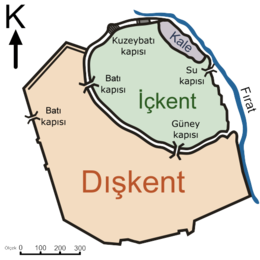

GAZİANTEP KARKAMIŞ İLÇESİ
Karkamış (Hititçe: Kargamiş, Mısırca: Karkameşa, Grekçe: Εὔρωπος, Latince: Europus), geçmişi Erken Bakır Çağına dek uzanan ve günümüzde Türkiye ile Suriye topraklarında yer alan antik kent.Hitit ve Asur İmparatorluğu dönemlerinde önemli bir şehir olan Karkamış, Roma döneminden sonra önemini kaybetmeye başlamıştır. En eski yazılı bilgilerine ancak Aplahanda'nın krallığı döneminde rastlanılan Karkamış'ın bu dönemlerde vasal bir krallık olduğu ve halkının ticaret yaptığı saptanmıştır. Aplahanda'nın oğlu Yahdul-Lim'in ölümünün ardından gelen üç yüzyıllık dönem hakkında bir bilginin bulunmadığı antik kent sırasıyla Mitanni, Mısır, Hitit, Asur, Yeni Babil, Ahameniş, Makedon, Seleukos ve Roma hakimiyeti altına girmiştir. En parlak dönemini Geç Hititler döneminde yaşayan Karkamış Orta Çağdan sonra tamamen terk edilmiştir. Rakımı 370 metre olan örenyerin Türkiye topraklarında kalan kısmının tescil tarihi 28 Ağustos 1986'dır. 1699 yılında keşfedilen antik kent 1910'larda Britanya Müzesi tarafından birçok kez kazılmıştır. Türkiye Cumhuriyeti'nin ilanının ardından askerî yasak bölge haline getirilen Karkamış'ın tekrar kazılması ancak 2011 yılında mümkün olmuştur. Son kazı çalışması ise 2012 yılında yapılmıştır. Suriye tarafında yer alan dışkentte ise 2006 ve 2010 yıllarında bir dizi kazı gerçekleştirilmiştir. [9] Günümüzde Suriye İç Savaşı nedeniyle Suriye kısmında arkeolojik çalışma yapılmamaktadır. Babilliler ile Mısırlılar arasında geçen Karkamış Muharebesi'nin yaşandığı bölgeden Kitâb-ı Mukaddes'te de bahsedilmektedir. Milattan önceki dönemlerdeki orijinal adının Cerabis olduğu düşünülen şehrin Helenistik ve Roma dönemlerindeki adı olan Europos'un da bu addan türediği farz edilmektedir. [12] Kentin kaynaklarla saptanmış en eski ismi Kargamiş'tır. Hititler döneminde kullanılan bu isme rastlanılan en eski yazılı eser Suriye'nin Ebla kentinde bulunan çivi yazılı tabletlerdir. Bu adın kökeniyle ilgili çeşitli görüşler vardır. Bunlardan biri ismin o dönemde Suriye'de ünlü bir tanrı olan Kemoş'tan türediği ve "Kemoş'un limanı" manasına geldiğidir ve bilim çevreleri tarafından da bu görüş kabul edilmektedir. Bir diğer iddia ise ismin Gılgamış'tan türediği üzerinedir. Şehir günümüzde Türkiye'de Karkamış, Suriye'de ise Cerablus şeklinde adlandırılmaktadır.

İLETİŞİM
ADRES:GAZİANTEP
TELEFON:0123456789